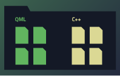

IDE Overview
Qt Creator is an integrated development environment (IDE) that provides you with tools to design and develop applications with the Qt application framework. Qt is designed for developing applications and user interfaces once and deploying them to several desktop, embedded, and mobile operating systems or web browsers (experimental). Qt Creator provides you with tools for accomplishing your tasks throughout the whole application development life-cycle, from creating a project to deploying the application to the target platforms.
|  |  |  |
| Managing Projects To be able to build and run applications, Qt Creator needs the same information as a compiler would need. This information is specified in the project settings. Setting up a new project in Qt Creator is aided by a wizard that guides you step-by-step through the project creation process, creates the necessary files, and specifies settings depending on the choices you make. For more information, see Managing Projects. | Designing User Interfaces To create intuitive, modern-looking, fluid user interfaces, you can use Qt Quick and Qt Design Studio. If you need a traditional user interface that is clearly structured and enforces a platform look and feel, you can use the integrated Qt Designer. For more information, see Designing User Interfaces. | Coding As an IDE, Qt Creator differs from a text editor in that it knows how to build and run applications. It understands the C++ and QML languages as code, not just as plain text. This enables it to provide you with useful features, such as semantic highlighting, checking code syntax, code completion, and refactoring actions. Qt Creator supports some of these services also for other programming languages, such as Python, for which a language server is available that provides information about the code to IDEs. For more information, see Coding. |
 |  | |
| Building and Running Qt Creator is integrated with cross-platform systems for build automation: qmake, Qbs, CMake, and Autotools. In addition, you can import projects as generic projects and fully control the steps and commands used to build the project. Qt Creator provides support for running and deploying Qt applications built for the desktop environment or a device. Kits, build, run, and deployment settings allow you to quickly switch between different setups and target platforms. For more information, see Building and Running. | Testing Qt Creator is integrated to several external native debuggers: GNU Symbolic Debugger (GDB), Microsoft Console Debugger (CDB), and internal JavaScript debugger. In the Debug mode, you can inspect the state of your application while debugging. The memory and CPU power available on devices are limited and you should use them carefully. Qt Creator integrates Valgrind code analysis tools for detecting memory leaks and profiling function execution. In addition, the QML Profiler enables you to profile Qt Quick applications. Qt Creator is integrated to the Qt Test, Boost.Test, Catch 2 test, and Google C++ Testing frameworks for unit testing applications and libraries. You can use Qt Creator to create, build, and run autotests. For more information, see Testing. | Publishing Qt Creator allows you to create installation packages for mobile devices that are suitable for publishing to application stores and other channels. You must make sure that the package contents meet the requirements for publishing on the channel. For more information, see Publishing to Google Play. |